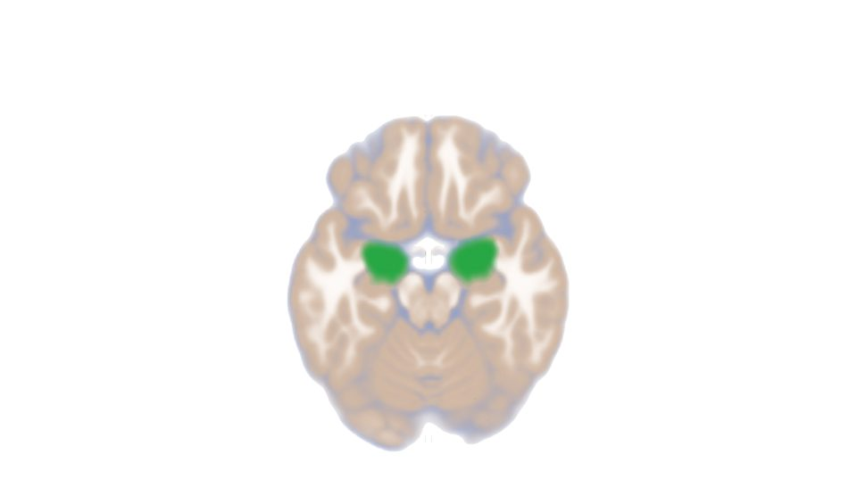

El cerebro de las emociones y los recuerdos
El sistema límbico es un conjunto de estructuras situadas en el borde interno de los hemisferios (limbus significa «borde»), alrededor del tálamo. Interviene en las emociones, la memoria, la motivación y algunas conductas básicas. Lo describió James Papez en 1937 como el circuito de las emociones (circuito de Papez), y Paul MacLean popularizó el término. Sus estructuras principales son el hipocampo, la amígdala, la circunvolución del cíngulo, el fórnix, los cuerpos mamilares y partes del tálamo y el hipotálamo.
El hipocampo
Es una estructura curvada en la cara interna del lóbulo temporal, con forma de caballito de mar (de ahí su nombre). Hay uno en cada hemisferio. Es esencial para:
- Formar recuerdos nuevos de hechos y experiencias (memoria declarativa o explícita). No es el «almacén» definitivo: durante semanas o años, y sobre todo durante el sueño, va transfiriendo los recuerdos a la corteza.
- Orientarse en el espacio: contiene las células de lugar, que se activan cuando estamos en un sitio concreto. Ver orientación espacial.
- Es una de las pocas zonas donde se forman neuronas nuevas en el adulto.
El caso que lo demostró fue el de H. M., un joven al que en 1953 se le extirparon ambos hipocampos para tratar su epilepsia. Desde entonces no pudo formar recuerdos nuevos, aunque conservaba los antiguos y podía aprender habilidades motoras. Lo estudió durante décadas Brenda Milner. Ver memoria.
Un hipocampo vulnerable
- Es una de las primeras zonas que se dañan en el alzhéimer; por eso el primer síntoma suele ser olvidar lo reciente. Su atrofia se mide en la resonancia.
- Es muy sensible a la falta de oxígeno (paro cardiaco), a la hipoglucemia y al estrés crónico por el cortisol.
- La esclerosis del hipocampo es la causa más frecuente de epilepsia del lóbulo temporal resistente a fármacos, que puede curarse con cirugía.
- Las encefalitis herpética y autoinmune lo afectan de forma preferente.
- En la amnesia global transitoria se ven pequeñas lesiones transitorias en el hipocampo.
La amígdala


Es un núcleo con forma de almendra situado delante del hipocampo. Es el centro de detección de amenazas y del miedo: reacciona en milisegundos ante un peligro, incluso antes de que seamos conscientes, y pone en marcha la respuesta de estrés. También da a los recuerdos su carga emocional: por eso recordamos mejor lo que nos emocionó. Las personas con lesiones de ambas amígdalas (como la paciente S. M., con la enfermedad de Urbach-Wiethe) no sienten miedo. Su hiperactividad se relaciona con la ansiedad y el estrés postraumático. Ver emociones.
Otras estructuras
- Circunvolución del cíngulo: atención, motivación, detección de errores, componente emocional del dolor.
- Cuerpos mamilares y fórnix: memoria. Se dañan por falta de vitamina B1 en el alcoholismo (síndrome de Korsakoff).
- Corteza entorrinal: puerta de entrada al hipocampo; contiene las células de red descubiertas por May-Britt y Edvard Moser.
- Bulbo olfatorio: el olfato es el único sentido conectado directamente con el sistema límbico, y por eso los olores evocan recuerdos con tanta fuerza.
Fuentes
- Scoville WB, Milner B. Loss of recent memory after bilateral hippocampal lesions. J Neurol Neurosurg Psychiatry. 1957;20:11-21.
- Papez JW. A proposed mechanism of emotion. Arch Neurol Psychiatry. 1937;38:725-43.
- Feinstein JS, et al. The human amygdala and the induction and experience of fear. Curr Biol. 2011;21:34-8.
- LeDoux J. The amygdala. Curr Biol. 2007;17:R868-74.